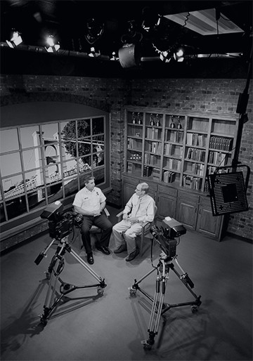

The WCCC.TV app is a new way for our viewers to enjoy the Waco City Cable Channel programs from anywhere at anytime in full HD! The HTML5 powered application allows viewers to watch recent additions to our channel from any computer, tablet, smartphone or other mobile device.
Besides watching your favorite shows at anytime, you can also tune in to our Live Stream and view programs being aired right now. Our programs offer great entertainment for people of any age and the entire station airs only high quality, family-friendly programming all day long.
So kick back, relax, and enjoy the new WCCC.TV app - designed just for you!
History of WCCC.TV
In 1992, the City of Waco was provided with government access cable channels to use in its communication efforts. For several years, the Waco City Cable Channel aired City Council meetings, Plan Commission meetings and occasionally, a special production.
In 1999, WCCC.TV, the Waco City Cable Channel premiered a new look that would meet its mission statement: "To Educate, Inform, Entertain and Involve people in the City of Waco".
In 2008, WCCC.TV transitioned into a new era, producing programs in high definition. In December, WCCC.TV became the first and only city channel in the state of Texas to broadcast in HD. And in September, 2010, WCCC.TV's HD programming was made available to anyone in the world on our HD web-channel.
About The Waco City Cable Channel
The goal at the City of Waco is to make WCCC.TV a powerful communication tool by providing viewers informative and entertaining local programming they can't find anywhere else. To accomplish this, the station must have a professional appearance and the dependability of a network station by filling every half hour with high quality productions that entertain as well as inform our citizens about their city.
To provide the variety of programs needed to attract and maintain a viewing audience, several series have been developed. Within these series, several programs, running five to twenty-five minutes, have been produced. Each week, two programs from each series air in what is called a program "block". Within these blocks are various PSA's, music videos and a variety of over twenty short segments topics, each with interesting videos, all in high definition. Just a few series examples are Waco, a Moment in Time, Good Gardening, Volunteers Make a Difference, Serve It Up Waco and Waco's Myths and Legends.
You can tune into WCCC.TV to learn about our community in a personal way from people who care. Our producers are dedicated to bringing you the best in local programming with a variety of shows. City Beat, a weekly news program, covers city events and happenings, many of which are not covered by other local broadcast stations. Restaurant inspection scores, a city calendar and City of Waco job listings are also included in City Beat. You can learn about the wildlife, staff and volunteers at the Cameron Park Zoo in our award winning program, Step Into the Wild at the Cameron Park Zoo. WCCC.TV features Waco's rich and unique past with Waco, Gateway to Texas History and Waco Remembers. In the series Know Your City, you can learn how the city and its various departments function, making Waco a great place to live.
Facilities
From our studios in City Hall, WCCC.TV produces a variety of talk shows including the City Talk Radio Show, that airs on three local radio stations and is replayed several times each week on WCCC.TV. City Manager Larry Groth hosts Know Your City Staff, an opportunity to meet city department directors and discover how the department functions. WCCC.TV also produces 30 minute monthly talk shows for the Greater Waco Chamber of Commerce, the Cen-Tex African-American Chamber of Commerce, the Cen-Tex Hispanic Chamber of Commerce, the Waco-McLennan County Public Health District and a program that features Waco's Police, Fire and Emergency Management staff.
WCCC.TV also produces The Waco City Council and Plan Commission meetings in HD and replays them several times each week. Unlike other TV stations, WCCC.TV records entire news conferences and special presentations to bring you the complete story. During severe weather alerts, viewers can see the same live weather radar and hear live reports from the amateur radio storm spotters that the staff in the Emergency Operations Center receive.
The quality of programs produced by WCCC.TV has earned several awards, including numerous Telly Awards received each year since 2004, and the Beacon Award - ranking WCCC.TV among the top three best city cable channels in the nation.
After you watch the Waco City Cable Channel and see the variety and quality of programming offered, you will become a member of our ever growing audience. Available in HD on Grande channel 810, in SD on Grande and Time Warner channel 10, and in HD from anywhere in the world on our web-channel and mobile apps.